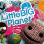
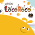
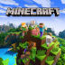

Audio Import Database
library_music
download
album
audio_file
code
Among Us
Leonz Drip
Seek
Space Theme
Hollow Knight
Sisters of Battle
White Palace

LittleBigPlanet
Deploy - Rag Doll Kung Fu
Recovery - i_pizz_travelling
The Gardens
The Orb of Dreamers
The Pod
LittleBigPlanet 2
Left Bank Two
Move Pack - move_main_2
The Pod
LittleBigPlanet 3
Look At What You Could've Won!
Popit Puzzle: Term 1
Rum Hee
The Pod
The Pod - Alpha

LocoRoco
Aio Aio
Bu Bu Poruche
Dadhi Dado Da
Doda Doda
Game Over
Instrumental Main Theme
Kuttetekaruna
Moinoi Moinoi
Moja's Song
Moro Mojya Nga
Nyokki
Oreo
Pupapu Poapoa
Stage Clear
Uwauwau
Yoi Yore

Minecraft
Aerie
Beginning 2
Blocks
Cat
Chirp
Clark
Danny
Dog
Dry Hands
Far
Firebugs
Five
Floating Trees
Haggstrom
Infinite Amethyst
Key
Living Mice
Magnetic Circuit
Mall
Mellohi
Mice On Venus
Minecraft
Moog City 2
Mutation
otherside
Oxygène
Pigstep
Stal
Strad
Subwoofer Lullaby
Sweden
Ward
Wet Hands
My Singing Monsters
Basic Plant Island Song
Dawn of Fire - The Continent
Earth Island
Earth Island (In-game)